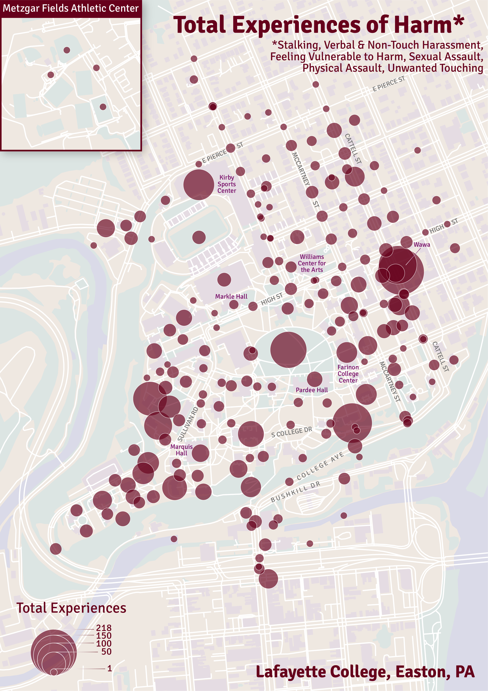
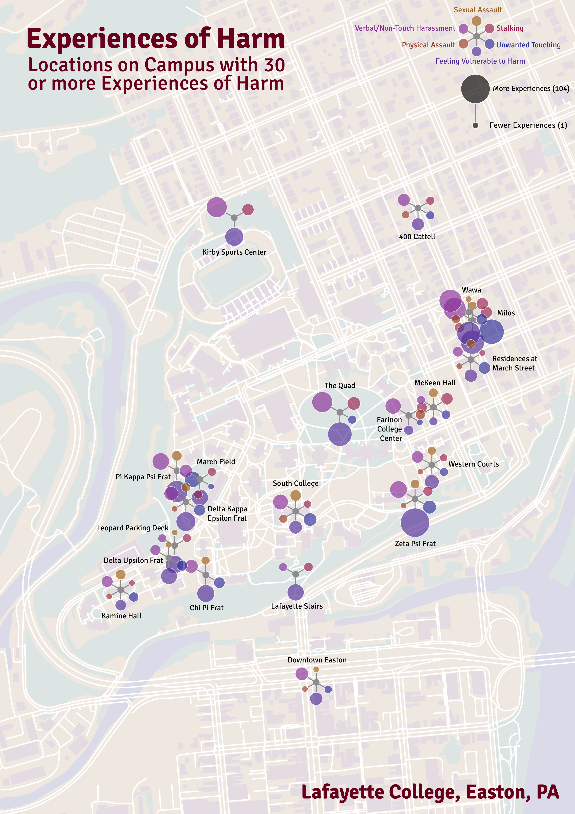
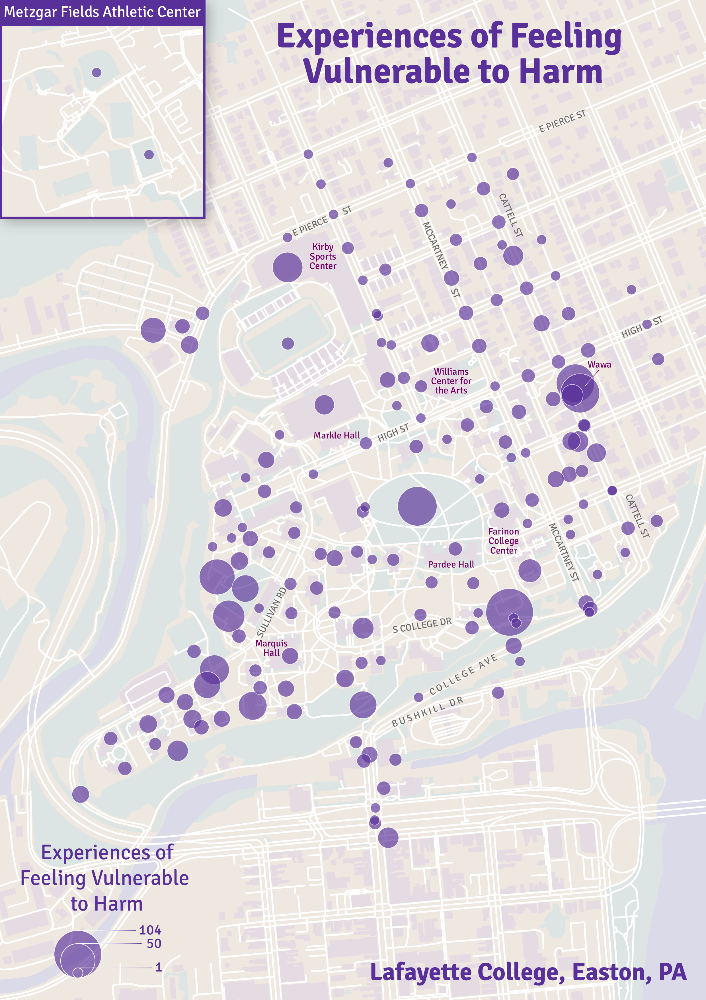

This project was developed in collaboration with Dana Cuomo and the Gender-Based Violence Research Lab at Lafayette College. Having collected data from students on gender-based violence on Lafayette’s campus, Dana and her students needed a good way to share this data with university administration and other students, while also protecting the privacy of students who had submitted data. At this time, Dana invited me to join the project. I took on the primary task of developing the maps, sharing them with Dana and her students, and soliciting feedback on color and text choices, as well as thematic map type. We created eight maps in total. Six maps displayed locations of specific types of harm (including types of violence not typically recorded in legal reporting, such as feeling vulnerable). One map displayed total experiences of harm. Finally, one map displayed the 20 locations with the most experiences of harm in a “snowflake” style map.
The maps that resulted from this collaboration were shared with the administration to argue for changes in the built environment of the university, including the addition of most lights on campus. The maps were also displayed to students in the university’s library, where many male students commented that they did not realize the extent to which other students were harmed, and appreciated the maps as a visual. The maps have been included in the sexual harassment prevention training that all new Lafayette students must take, starting in Fall 2025. You can read more about this collaboration and our design choices in our article published in Cartographic Perspectives or via a public-facing news article in Penn State News.


